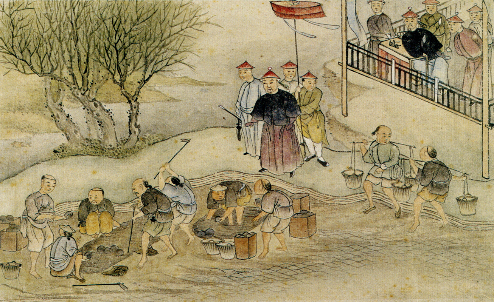
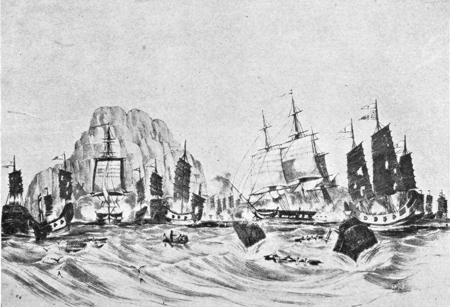
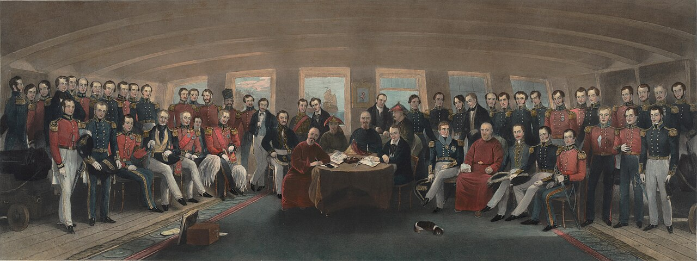

Cómo se rompe un monopolio de un siglo
Toca cada acto para expandirlo.
Durante décadas, la dinastía Qing lidió con rebeldes como Koxinga, leal a la caída dinastía Ming, que usaba el comercio marítimo para financiar sus ataques. La crisis fue tan grave que el emperador ordenó evacuar a toda la población costera kilómetros hacia el interior para cortarles los suministros. Los puertos reabrieron después de 1683, pero el miedo a que los extranjeros se aliaran con "nativos traidores" nunca desapareció.
El modelo de negocio tampoco ayudaba: antes del gremio Cohong, el emperador intentó centralizar el comercio en "Comerciantes del Emperador": uno de ellos pagó 42,000 taels por el puesto sin tener capital ni mercancía para cumplir los pedidos. El resultado fue un sistema de sobornos que se volvió la norma para mover cualquier caja de té o seda.
El punto de quiebre fue el Incidente de James Flint en 1759: un comerciante británico se saltó las prohibiciones para quejarse directamente ante el emperador por la corrupción en Cantón. En vez de escucharlo, lo metieron a la cárcel, y Pekín decidió que el experimento de varios puertos abiertos había fracasado.

Europa estaba obsesionada con el té y la seda, pero China no sentía que necesitara nada de Occidente: exigía el pago exclusivamente en plata. Los británicos, hartos de ver su plata desaparecer, empezaron a meter opio de contrabando desde la India para equilibrar las cuentas. Lo que comenzó como un problema de salud pública y fuga de plata terminó convirtiéndose en un conflicto de soberanía nacional.
El emperador, harto de ver a su pueblo volverse adicto, envía a Cantón a un funcionario incorruptible: Lin Zexu, apodado "Lin el Cielo Azul". En marzo de 1839 rodea las factorías extranjeras y deja a 350 personas encerradas durante semanas hasta que le entregan más de 20,000 cofres de opio, que destruye en una ceremonia pública.

En apenas un siglo, el volumen de opio que entraba a China creció cerca de 20,000% — la escala del problema que Lin Zexu heredó.
Durante siglo y medio la plata había fluido hacia China para pagar té y seda. El opio invirtió esa dirección en menos de una década.
El 27 de marzo de 1839, en vez de dejar que los mercaderes perdieran su mercancía ilegal, Elliot les ordena entregar el opio en nombre de la Corona, prometiendo reembolsarles las pérdidas. Con ese movimiento, lo que era un problema de contrabandistas privados se transforma de golpe en una cuestión de soberanía estatal, obligando a Londres a intervenir militarmente para "cobrar" esa deuda.
El primer disparo llega por una situación casi absurda: el 3 de noviembre de 1839, en aguas de Ch'uan-pi, el mercante británico Royal Saxon intenta ignorar el bloqueo de sus propios compatriotas para negociar con los chinos. El buque de guerra HMS Volage le dispara una advertencia a su propio compatriota; la flota china sale a defenderlo, y ahí comienza la batalla que da inicio formal a la Primera Guerra del Opio.
Ya no era solo una grieta comercial: era el choque frontal entre un imperio que se sentía el centro del mundo y una potencia industrial que no aceptaría el sistema de subordinación tributaria de Cantón.

El tratado abre cinco "puertos de tratado" (Cantón, Amoy, Fuzhou, Ningbo y Shanghái), donde comerciantes extranjeros pueden residir y operar permanentemente. Se disuelve legalmente el gremio Cohong, que había controlado cada gramo de té y seda durante décadas.

Shanghái, mucho más cerca de las zonas productoras de seda del delta del Yangzi, arrebata el trono comercial a Cantón por pura lógica de costos.
En solo dos años, Shanghái multiplica por más de tres su exportación de seda: el nuevo puerto adelanta a Cantón, que había dominado el comercio durante casi un siglo.
China cede Hong Kong a la Corona británica y paga una indemnización de 21 millones de dólares.
Se rompió algo más grande que dinero o barcos: la idea de que el emperador era el centro del universo. Empieza lo que en China se recuerda como el siglo de la humillación.
Reversión simbólica. Las Zonas Económicas Especiales creadas en 1979-1980 están, muchas de ellas, construidas sobre antiguos puertos de tratado: una inversión deliberada de la fortuna respecto al periodo de debilidad que empezó en 1842.
Guangdong sigue siendo el corazón. El delta del río Perla, centrado en Shenzhen y Guangzhou, genera más del 23% de las exportaciones nacionales: la misma provincia donde operaba el Sistema de Cantón sigue siendo la rendija por la que China se conecta con el mundo.
La desconfianza histórica hacia la dependencia externa explica por qué el gobierno actual prioriza la seguridad económica sobre el libre mercado: políticas como la "Doble Circulación" y la autosuficiencia tecnológica son la respuesta directa al trauma del siglo de la humillación.